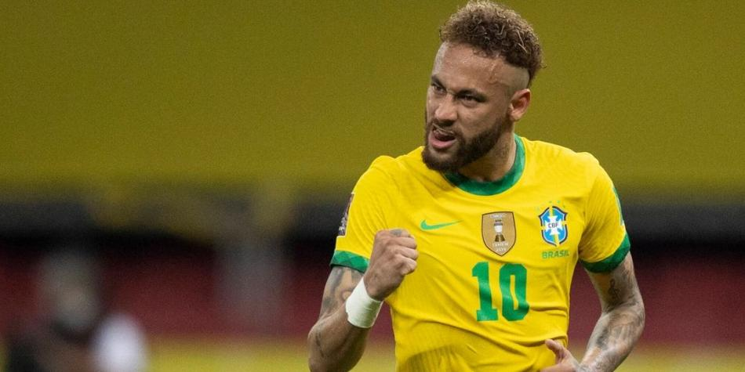

SELECCION DE BRASIL
Formó parte de la plantilla de Brasil para el mundial sub-17 2009 realizado en nigeria, jugando 3 partidos y anotando 1 gol, el cual se lo convirtió a japon.
En 2011 formó parte de la plantilla de Brasil para disputar el campeonato sudamericano sub-20 2011 que se disputó en peru. En este torneo Neymar fue la figura y goleador anotando 9 goles en 7 partidos.
En julio de 2012 fue incluido por Mano Menezes en la lista de 18 jugadores que integraron el equipo olímpico brasilero que compitió en los juegos olimpicos de londres de 2012. En el primer partido ante egipto, anotó un gol de cabeza. El partido acabó 3-2. En el segundo ante bielorrusia, anotó otra vez pero de tiro libre y con él, puso el 2-1 en el marcador. En ese mismo partido, regateó a dos jugadores y dio una magnífica asistencia de tacón a oscar para que anotara el 3-1 definitivo. En el tercero y último de la Fase de Grupos, se enfrentaron a nueva zelanda. Neymar empezó marcando un gol pero fue anulado. Brasil ganó 3-0 con goles de danilo, damiao y Sandro y consiguió su tercera victoria consecutiva y se clasificó para los Cuartos de Final. Brasil gana 3-2 a Honduras. mario martinez le dio la ventaja a Honduras luego de meter la pelota en la portería brasileña en el minuto 12. Honduras se quedó con 10 hombres tras la expulsión de crisanto en el minuto 32. El hondureño tuvo que salir del campo después de que el árbitro le sacara dos tarjetas amarillas en menos de un minuto. Apenas seis minutos después, Damião anotó para hacer el empate. En el segundo tiempo, roger espinoza anotó el 2-1 a favor de Honduras, pero Neymar consiguió poner las tablas de nuevo en el marcador. Poco después, Damião logró el 3-2. Cayeron derrotados en la Final por mexico por el resultado de 2-1 con dos goles de oribe peralta, el primero a los 28 segundos de comenzar el partido y el Segundo en el minuto 75. Hulk anotó el único Gol de la Canarinha en el minuto 90. Los jugadores de la selección pentacampeona recibieron la medalla de plata.
Ya en 2016 Neymar decidió participar en los juegos olimpicos rio de janeiro 2016 con la obligación de revertir el resultado de la anterior cita olímpica, esto en desmedro de su participación en la copa america castenario 2016debido a que su club no le permitió jugar en ambas competencias. Volvió a su país con la ilusión de conseguir una prezea especialmente escurridiza para la Canarinha, más aún por el hecho de ser local en la cita de los anillos. Comenzó en el torneo capitaneando a brasilen el partido frente a sudafrica terminando en empate sin goles, repitiéndose el mismo resultado ante irak. En el partido final del grupo A, la verdeamarelha obtuvo un triunfo clave ante dinamarca por un contundente 4-0 consiguiendo de paso la punta del grupo, esto luego de las críticas recibidas en los dos cotejos anteriores dirigidas especialmente al rendimiento de Neymar. Para los cuartos de final la Canarinha enfrentó a colombia, Neymar abrió la senda del triunfo con un gol de tiro libre a los 12 minutos, luego cometió una fuerte falta a un futbolista colombiano que derivó en un fuerte altercado entre ambas selecciones, para más adelante ya en el final de la segunda parte asistir a luan para el 2-0 definitivo. En semifinales el duelo fue ante la sorpresa del torneo honduras, el encuentro finalizó con un categórico 6-0 con 2 goles de Neymar siendo uno de penal y el otro tiene el récord de ser el más rápido de los juegos olimpicos con 20 segundos. Ya en la gran final se revivió el "mineirazo" entre el local Brasil y alemania, el partido inició de buena manera para los brasileños con la anotación de tiro libre de Neymar, pero en el segundo tiempo el capitán alemán max mayer convirtió el empate con el cual finalizaría el tiempo reglamentario. Al no haberse hecho daño ambos equipos en el alarge se tuvo que recurrir a la definicion a penales, en la cual Alemania inició con la anotación de matthias ginter siendo igualada por marquinhos, el 1-2 fue hecho por Niklas Suele para luego ser empatada renato augusto, Alemania estuvo en ventaja de nuevo con la diana de julian brandt mientras que Brasil volvió a empatar con luan, el 3-4 fue de sergfe gnabry y rafinha sin fallar puso el empate a 4, ya en el penal final de la serie para los germanos el arquero Weverton atajó el lanzamiento de nils peterson, quedando Neymar con la responsabilidad máxima de anotar para el histórico triunfo brasileño, con un negativo historial por detrás y una presión desbordante Neymar convirtió el gol del triunfo para Brasil obteniendo de esta forma el único título que la Canarinha no había conseguido en toda su historia.